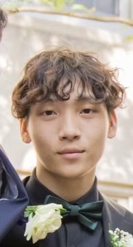

Duy (Simon) Pham
Electrical Engineering & Embedded Systems Student
Welcome to my portfolio! I am an incoming senior at UMass Boston blending hard hardware capabilities with robust firmware architectures. Whether designing advanced power distributions or training machine learning algorithms for remote node architectures, I aim to build secure, highly reliable hardware systems.

Education
University of Massachusetts Boston
Graduation: Dec 2027
College of Science & Mathematics • B.S. Electrical Engineering (Minor in Computer Science)
GPA: 3.60 / 4.00
Academic Honors: Dean's List (2023–2026)
Relevant Coursework: Signals & Systems, Fields and Waves, Electronics I & II, Antenna Design, Digital Systems, Circuits I & II, Probability & Random Processes, Applied ODEs, Linear Algebra
Work Experience
Electrical Engineering Intern
May 2026 – Aug 2026
RMF Engineering Inc.
Baltimore/Boston
- Assisted in the design of building electrical power systems, including distribution panels, lighting circuits, and branch circuits for project documentation.
- Produced AutoCAD/Revit electrical drawings, including panel schedules and power distribution diagrams for construction drawing packages.
- Performed electrical load calculations and voltage drop analysis for commercial building electrical systems during early design phases.
- Collaborated with multidisciplinary engineering teams to coordinate electrical infrastructure with HVAC and architectural layouts.
Incoming Undergraduate Teaching Assistant
June 2026 – Aug 2026
UMass Boston (Signals & Systems and Probability & Random Processes)
Boston, MA
- Selected to support students through office hours, homework review, exam preparation, and reinforcement across core engineering coursework.
- Will assist students with Fourier transforms, convolution, sampling theorem, and probability distributions through technical problem-solving support.
Research Experience
Undergraduate Research Assistant
Jan 2026 – May 2026
Ubiquitous Communication and Networking (UCaN) Lab
Distributed Spectrum Sensing Algorithm Models
- Deployed and Implemented a multi-node wireless network via Raspberry Pis, collecting RSSI and throughput measurements for ML Algorithm Training.
- Automated data collection and controlled experimental parameters using XMLRPC and ZMQ Python scripts, implementing them seamlessly on Raspberry Pi node networks.
- Modified Distributed Spectrum Sensing Algorithm submodels, increasing consensus accuracy to ~95% and improving decision speed by ~20%.
- Integrated Linux-based Testbed Controller (Ubuntu) to support Software Defined Radio spectrum sensing experiments and Raspberry Pi control.
- Developed MATLAB probability density function models to characterize detection thresholds, reducing false detection rates in the DSS algorithm.
- Wrote and deployed Bash scripts for testbed controller to Raspberry Pi to securely transfer Python scripts, CSV data files, and to save collected experimental data.
Engineering Projects
STM32 Drone Health Monitoring System
Feb 2026 – May 2026
Firmware & Embedded Systems Engineer • UMass Boston Robotics Club
- Built and deployed in C a functional project prototype using Arduino, successfully integrating a sample ML algorithm into a custom PCB flight controller.
- Ran 30+ motor health tests for Machine Learning Algorithm Training, using real-time collected voltage, current, temperature, and RPM measurements.
- Reduced false drone health alerts by 25%, maintaining 97% Drone Health Accuracy through algorithm training and tuning, validated with 300+ structural tests.
- Deployed C code for STM32 microcontrollers to process ESC telemetry and monitor active drone health inside a local Python-based UI with 10 ms refreshes.
Raspberry Pi Interactive Piano Learning System
Feb 2026 – May 2026
Embedded Software Lead
- Developed Python software for a Raspberry Pi-based piano learning system, translating user switch inputs into real-time multicolor LED feedback loops.
- Built Python music libraries for preset songs, converting musical note sequences into binary LED display patterns with adjustable BPM playback configurations.
- Integrated and tested electrical hardware assemblies, including custom breadboards, interactive push buttons, LEDs, resistors, and Raspberry Pi GPIO array configurations.
- Created MATLAB analysis scripts to measure user baseline accuracy across multiple validation trials and track learning progression under varying control metrics.
AM Radio Receiver & Transmitter
June 2025 – Nov 2025
Analog Hardware Project
- Implemented a high-selectivity bandpass filter receiving 680 kHz, 850 kHz, and 1510 kHz radio waves, verifying clear real-time audio playback from localized Boston radio stations.
- Optimized physical RC filters, lowering the circuit noise floor by ~15% and reducing ambient noise by ~5 dB for clearer recovered speech, validated over 30+ iterative test trials.
- Designed and deployed a diode-based envelope detector stage to rectify and cleanly demodulate AM audio signals from varying radio station carrier waves.
- Designed, built, and tuned an LM386 audio amplifier stage with variable gain (5x–20x) for user-controlled volume adjustment.
Technical Skills
Programming & Software
Python, C, C++, MATLAB, LTspice, Linux, Bash, LaTeX, Solidworks, Verilog/VHDL, KiCAD
Circuit Design
Op-amps, Filters, Microwave Circuits, Sensors, BJTs, MOSFETs, PCB Design
Lab & Measurement
Oscilloscope, Function Generator, Multimeter, Spectrum Analyzer
Embedded Systems
Raspberry Pi, STM32, ESP32, Arduino, Nvidia Jetson
Conferences & Engagement
NEWSDR Boston 2026
New New England Workshop on Software Defined Radio
MassRobotics Boston 2026
Form & Function Robotics Challenge Competition